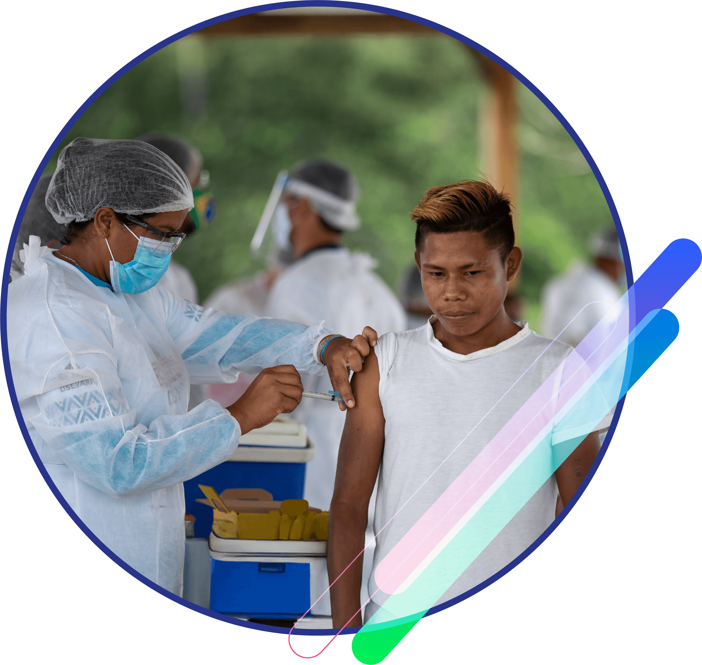

Compara el modelo colombiano con el de otro país, como Canadá, Reino Unido o Chile. Por ejemplo, podrás identificar cómo funciona el acceso universal en Canadá, donde el Estado garantiza la cobertura total de salud sin intermediarios, y contrastarlo con el modelo colombiano, que combina aseguradoras (EPS) y prestadores de servicios (IPS). Este análisis te ayudará a reflexionar sobre las fortalezas y desafíos del SGSSS.
Estudiaremos cómo esta ley transformó el sistema de salud en el país, ampliando la cobertura a millones de personas que antes no tenían acceso al servicio. Por ejemplo, conocerás cómo pasó Colombia de tener menos del 25% de cobertura a más del 90% en menos de dos décadas, pero también analizaremos las críticas y dificultades que surgieron, como la fragmentación en la atención y los problemas de sostenibilidad financiera.

Revisaremos casos reales de municipios rurales donde el régimen subsidiado ha sido clave para garantizar el acceso a la salud a personas en situación de pobreza o vulnerabilidad. Por ejemplo, veremos cómo en regiones como La Guajira o el Chocó, este régimen ha sido la única vía para que muchas familias accedan a servicios básicos como vacunación, controles prenatales y atención médica de urgencias, enfrentando barreras geográficas, culturales y logísticas.